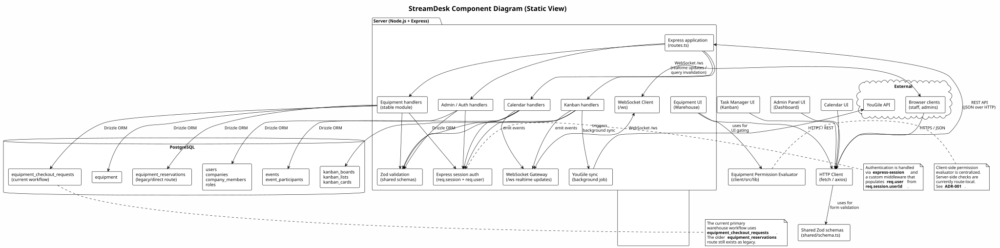
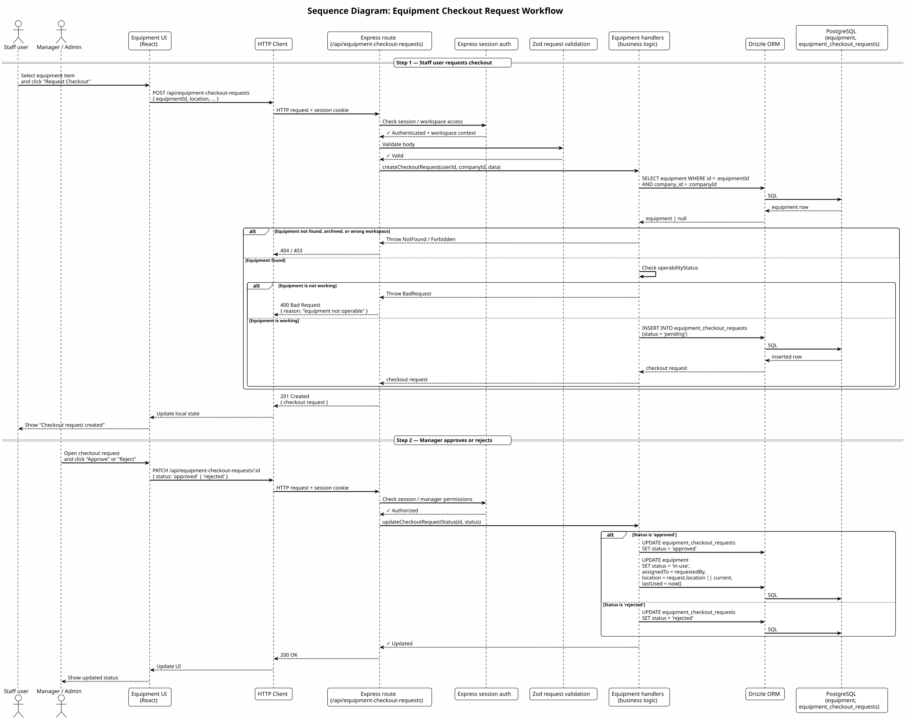
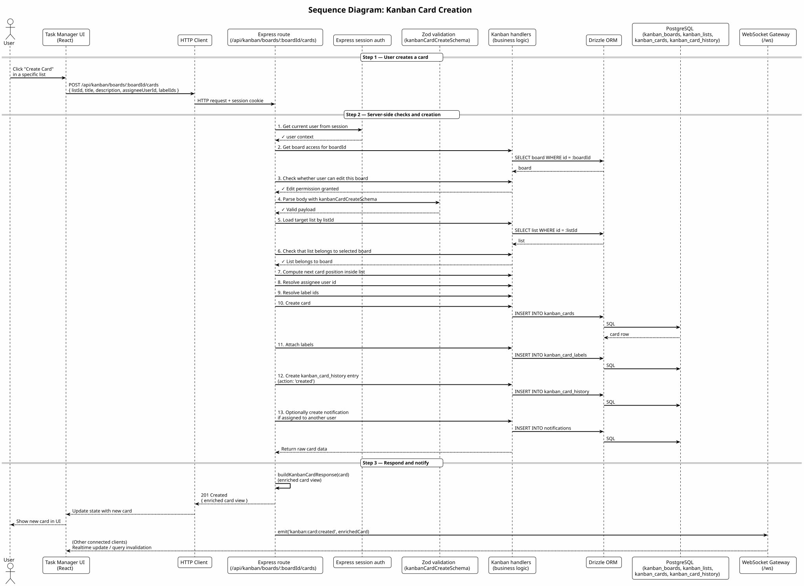
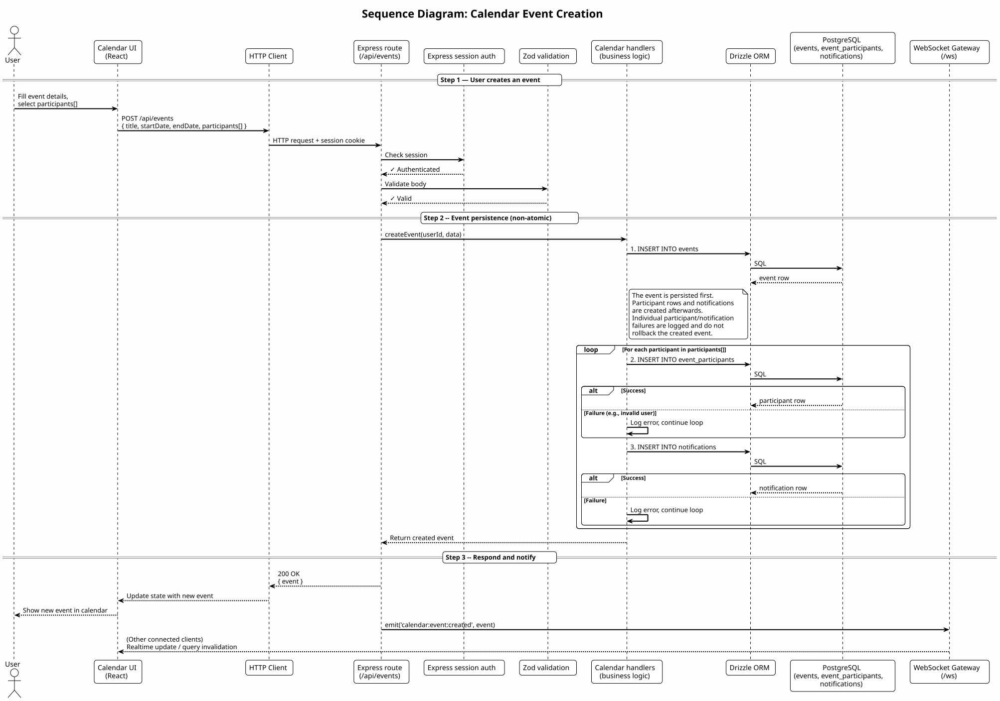
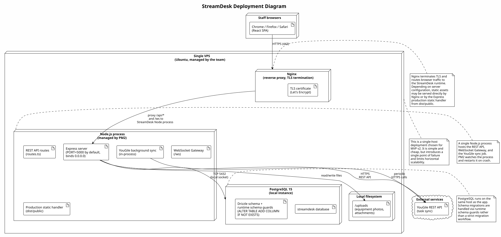

StreamDesk Architecture¶
StreamDesk is a workspace platform for event and production teams. It brings together a task manager (Kanban), a calendar, an equipment warehouse, and an admin dashboard into a single interface, with multi-tenant isolation between companies.
This document is the canonical index for the maintained architecture of StreamDesk. It describes the current delivered architecture and links the supporting architecture artifacts.
Architecture Overview¶
StreamDesk is built as a monorepo with three logical layers:
- Client layer — a React + TypeScript single-page application.
- Server layer — a Node.js + Express REST API and WebSocket gateway.
- Data layer — a PostgreSQL database accessed through Drizzle ORM.
A shared/ directory contains TypeScript types and Zod validation schemas used by both the client and the server. Our team focuses on the architecture and implementation of the Task Manager (Kanban), Calendar, Equipment (Warehouse), and Admin Panel modules.
Architecture Views¶
Static View¶
The static view shows the main components of the system, the external systems it interacts with, and the communication paths between them.

Source: static-view/component-diagram.puml
The diagram shows three internal layers (Client, Server, Data) and the external integrations (YouGile, browser clients).
Key architectural boundaries:
- Authentication boundary: Handled via express-session and a custom middleware that populates req.user from req.session.userId.
- Active-workspace boundary: Every authenticated product request resolves one validated company or personal workspace from the session and persisted user preference. Company records must match the selected company; personal records use a null company and entity-level ownership or membership. Ordinary screens never aggregate multiple companies, including for platform administrators. Records with missing or ambiguous company ownership are quarantined from company screens; Calendar rows are backfilled only when the organizer has exactly one active company.
- Realtime boundary: The server exposes a session-authenticated /ws WebSocket endpoint. Discussion clients subscribe only to server-authorized active-company, project, Kanban V2 card, Location, or equipment scopes. Persisted REST/storage state remains authoritative; identifier-only events trigger React Query invalidation and reconnect refetches. Periodic systems, streams, tasks, and calendar refreshes are invalidation-only and do not broadcast record payloads globally.
- Equipment module: The Equipment module is stable, but its current primary state-changing workflow is checkout requests and approve/reject handling. The older equipment_reservations route still exists as legacy, but it is not the main warehouse workflow.
- Equipment destination and work-context model: Physical destination is stored separately as either a company Location reference or manual text. Optional project/Kanban V2 context uses additive equipment_context_links rows with explicit manual or checkout sources, supports multiple cards without duplicate project summaries, and does not itself issue, return, reserve, or change equipment operability. Historical text and Legacy Task Manager fields remain readable, but new selectors and records use Kanban V2 only.
- Equipment activity model: Attributed equipment comments and validated attachments use company-scoped equipment_comments rows, separate from maintained equipment notes and specifications. Legacy JSON comments remain readable through the activity API but are removed from list/detail payloads; list cards receive only counts and latest-activity metadata. Equipment and company realtime events invalidate persisted REST state, including when the same detail view is opened from a kit component.
- Warehouse taxonomy and storage model: Company-scoped equipment_categories provide one category and one optional subcategory level, while warehouse_storage_locations provide an ordered physical hierarchy for rooms, zones, racks, shelves, cases, bins, and custom nodes. Equipment keeps stable category and storage identifiers plus synchronized legacy text for compatibility. Archived nodes remain readable on linked equipment but are unavailable for new selection, and a return clears the active physical destination before assigning the selected storage node or manual storage text.
- Editor autosave model: Existing Warehouse equipment, equipment notes, and projects use a shared debounced client hook. Valid snapshots are serialized to suppress duplicate writes, queued changes are flushed before an editor closes, local progress is published to the header synchronization indicator, and successful REST mutations invalidate related React Query data. Server-published identifier-only company/project/equipment events keep other authorized sessions current; creation forms remain explicit.
- Location context model: Company-scoped Location workspaces are linked to Kanban V2 cards and projects through dedicated many-to-many tables. Existing single-location card data remains readable through an additive runtime migration, while archived Locations stay visible on historical links but cannot be selected for new links. Location topics are stored separately from maintained workspace notes, support note/problem types and lifecycle audit, and publish identifier-only refresh events to authorized Location and company realtime scopes.
- Feature-module composition boundary: Maintained React feature pages act as orchestration layers for queries, mutations, realtime subscriptions, autosave, and interaction state. Pure transformation and validation logic lives in focused client/src/lib/ modules, while reusable controlled presentation lives under client/src/components/. Kanban V2, Warehouse, Calendar, Dashboard, Projects, Locations, Estimates, Connection Schemas, Admin, Platform Admin, and vMix follow this boundary; Legacy Task Manager remains outside the maintained feature set.
- Server route composition boundary: The root Express registrar retains cross-domain and migration-coupled workflows, while independently testable Rooms, Notifications, and Push Notifications registrars live under server/routes/. Shared database timeout handling lives under server/services/ so extracted route groups use the same failure contract without duplicating infrastructure logic.
Coupling and cohesion: - Coupling between layers is low. The client talks to the server only through REST over HTTP/JSON and WebSocket. - Cohesion of domain modules is high. Critical access-control logic (like equipment permissions) is isolated into dedicated, pure modules on the client side rather than scattered across UI components.
Maintainability implications:
- Centralizing business rules (e.g., permission evaluators) makes the system easier to reason about and modify without introducing regressions in unrelated modules.
- Feature entry pages keep stateful orchestration close to its owner while pure models and controlled components can be tested independently and reused without duplicating domain decisions.
- routes.ts remains a maintainability risk because many authorization and runtime-migration workflows are still route-local; only route families with a characterized, low-coupling boundary are extracted incrementally.
Dynamic View¶
The dynamic view shows how components interact over time for non-trivial workflows. We maintain sequence diagrams for the most critical scenarios across our core modules.
Equipment Checkout Workflow¶

Source: dynamic-view/equipment-checkout-sequence.puml
Scenario: A staff user requests equipment checkout from the warehouse, and a manager approves or rejects it. Why it matters: This is the current primary state-changing workflow for the Equipment module. It illustrates how the system enforces business rules (workspace access, equipment operability) and manages state transitions (pending -> approved/rejected) without relying on date-range availability checks.
Kanban Card Creation¶

Source: dynamic-view/kanban-card-creation-sequence.puml
Scenario: A user creates a new card in a Kanban board. Why it matters: This scenario demonstrates the strict server-side validation and permission checks required for task management. It shows how the system verifies board access, list membership, resolves assignees and labels, creates history entries, and optionally triggers notifications, all before emitting a realtime update via the WebSocket gateway.
Calendar Event Creation¶

Source: dynamic-view/calendar-event-creation-sequence.puml
Scenario: A user creates a calendar event and invites participants. Why it matters: This scenario highlights a deliberate architectural choice regarding fault tolerance. The event is persisted first. Participant invitation rows and notifications are created afterwards. This approach is tolerant to individual participant/notification failures (which are logged but do not rollback the created event), prioritizing the creation of the core event over the atomicity of all side-effects.
Deployment View¶
The deployment view shows where the system runs and how users reach it.

Source: deployment-view/deployment-diagram.puml
What the diagram shows:
- A single VPS running Nginx, a Node.js process managed by PM2, and a local PostgreSQL instance.
- Nginx terminates TLS and routes browser traffic to the StreamDesk runtime. It proxies both REST API (/api/*) and WebSocket (/ws) traffic to the Node.js process. Depending on server configuration, static assets may be served directly by Nginx or by the Express production static handler from dist/public.
- Node.js process hosts the REST API, the WebSocket gateway, and background jobs (e.g., YouGile sync) in the same process.
- PostgreSQL uses Drizzle schema definitions combined with runtime schema guards (ALTER TABLE ADD COLUMN IF NOT EXISTS) rather than a strict migration workflow.
Why this deployment model was chosen: - For the current stage of the product (MVP v2, small user base, small team), a single VPS is the simplest model that satisfies availability and cost constraints. - PM2 provides process supervision (automatic restart on crash) without introducing a container orchestrator.
How it supports or constrains the product: - Supports Availability: PM2 restarts the process on crash. - Constrains Scalability and Fault Tolerance: The VPS is a single point of failure, and horizontal scaling would require reworking the deployment and session handling.
Architecture Decision Records¶
The following ADRs document the most important architectural decisions made for the core features developed by our team. Each ADR is linked to the quality requirements it addresses.
- ADR-001: Centralized Equipment Permission Evaluator
- ADR-002: Declarative Protected Route Wrapper
- ADR-003: Unified Monorepo Test and Coverage Configuration
- ADR-004: Authenticated Scoped Realtime Transport
- ADR-005: Validated Active Workspace Tenant Boundary
How the decisions fit together¶
These five decisions form the foundation of our team's approach to security, functional correctness, and maintainability:
- Functional Correctness & Security (QR-001, QR-002):
- ADR-001 ensures that complex business rules for equipment access are evaluated consistently on the client side, while server-side route-local checks enforce authorization at the API boundary.
- ADR-002 complements this at the UI/routing layer by declaratively protecting pages, ensuring that users cannot access restricted areas without proper authentication and tab-level permissions.
-
Together, they create a defense-in-depth approach: the UI prevents unauthorized navigation, and the server enforces permissions before modifying data.
-
Maintainability & Testability (QR-003):
- ADR-003 ensures that the entire monorepo (client, server, and shared logic) is covered by a unified automated testing and coverage pipeline.
-
Because the permission logic (ADR-001) and the routing guards (ADR-002) are isolated and pure, they are highly testable. ADR-003 guarantees that this testability is enforced automatically in CI, providing repeatable evidence that critical access-control behavior remains correct over time.
-
Realtime Security & Consistency (QR-002, QR-003):
- ADR-004 authenticates WebSocket upgrades through the same session model as REST, rechecks scope access for every subscription, and keeps all mutations in authorized HTTP routes.
-
Identifier-only events, bounded lifecycle resources, duplicate suppression, and reconnect refetches prevent realtime delivery from becoming a second or weaker source of application state.
-
Tenant Isolation (QR-002, QR-003):
- ADR-005 establishes the selected company or personal workspace as a server-validated boundary for REST, realtime, creation defaults, Dashboard aggregation, caches, and navigation.
- Automated multi-company regression tests verify list filtering, direct-record denial, personal data separation, workspace persistence, and WebSocket subscription isolation.